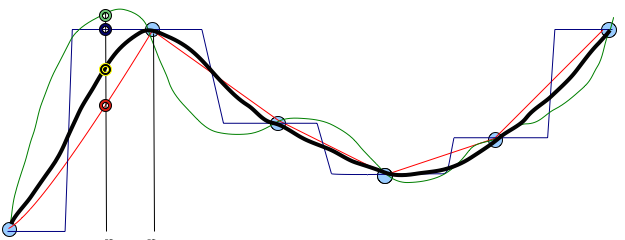
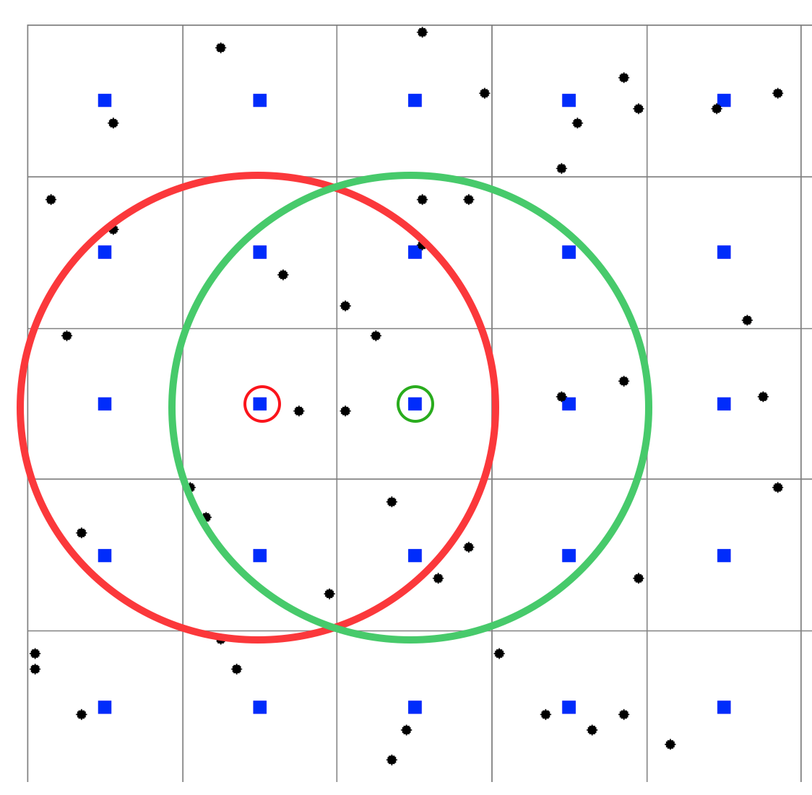
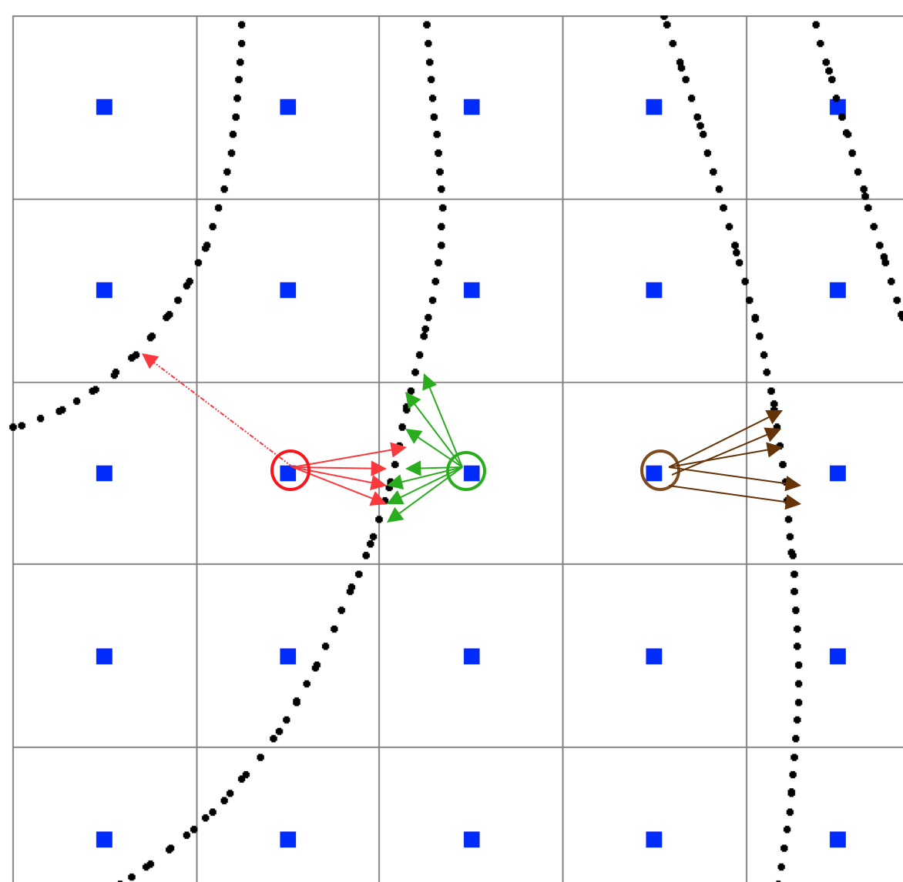

Spatial Interpolation: Methods
Helena Mitasova
Learning objectives
- define spatial interpolation and its applications
- classify methods and their properties
- explain Voronoi polygons and linear interpolation on triangular irregular network
- explain and apply inverse distance weighted method
- define geostatistical approach
- define radial basis functions and splines
Spatial interpolation
Estimate values at unsampled points using values measured at given points to:
- convert 2D, 3D scattered points, profiles, isolines to raster: gridding
- resample 2D, 3D raster data to higher resolution
- compute denser or smoother mesh representation
Scattered points to grid
Most common application


Bi-variate interpolation
From given $(x,y,z)$ scattered points to 2D grid: surface


Tri-variate interpolation
From given $(x,y,z,w)$ scattered points to 3D grid: volume


Soil properties: clay content
Quad-variate interpolation
From given $(x,y,z,t,w)$ scattered points in space and time to 4D grid: time series of volumes

Sampling points of groundwater pollution in space and time (10 years)
Quad-variate interpolation
Groundwater pollution over 10 years: 3D space + time

Spatial interpolation: foundations
Problem definition
- find a function which passes through (or close to) the given set of discrete points and then
- use this function to estimate the values at unsampled points – usually a regular grid
Scattered points to grid
Find mathematical function $z = F(x,y)$ to estimate values $z$ at regular grid
using values $z_i$ at $m$ given scattered points $(x_i,y_i), i=m$
Mathematical formulation
Bi-variate interpolation and approximation can be formulated as follows:
Given $m$-points $(x_i, y_i, z_i), i=1,m$
find such $F(x,y)$ that for each $i=1,m$
$$z_i=F(x_i,y_i)$$
and compute $z_k=F(x_k,y_k)$ where $(x_k,y_k)$ are grid points
Why is this a difficult problem?
Interpolation problem solution
Problem does not have a unique solution:
Interpolation problem solution
Problem does not have a unique solution:

Interpolation problem solution
Problem does not have a unique solution:

Interpolation problem solution
Additional conditions are needed

Interpolation conditions
- Locality : each point influences the surface only up to certain distance
or value at a given point will be similar to values at nearby points
- Geostatistical: surface is one realization of a random function with spatial covariance
- Smoothness: surface should be as smooth as possible while passing through or close to the data points
Interpolation general equation
Spatial interpolation function $F(r)$ can be expressed as:
$$
F(r) = T(r) + ∑ λ_j R(r,r_j) \; \; j=1,m
$$
- $r = (x,y)$ is location of an unsampled point
- $r_j=(x_j,y_j$) is location of a measured point
- $T(r)$ is trend (low order polynomial)
- $λ_j$ are coefficients
- $R(r,r_j)$ is a function of distance between the points (radial basis function, model variogram)
Local interpolation methods
Only a small subset of $n$ neighboring points is used
- Voronoi polygons
- Triangular Irregular Network (TIN) - based linear interpolation
- Inverse distance weighted method
Voronoi (Thiessen) polygons
Voronoi polygons define unique nearest neighborhood around each point
Voronoi polygons are derived from the measured data - the measured point (red)
is at the center of a Voronoi polygon
Voronoi diagram generator
or Parametric Voronoi generator
Voronoi (Thiessen) polygons
Voronoi polygon edges are equidistant to 2 given points,
define unique nearest neighborhood around each point
Voronoi polygons are derived from the measured data - the measured point (red)
is at the center of a Voronoi polygon
Voronoi diagram generator
or Parametric Voronoi generator
Voronoi (Thiessen) polygons
Value at an unsampled point $z(x,y)$ is the same as the measured value $z(x_j,y_j)$
at the center of the Voronoi polygon $V_j$ within which the unsampled point is located:
$$ T(x,y) = 0 $$
$$z(x,y) = λ z(x_j,y_j)$$
- $\lambda = 1$, if $(x,y)$ is within $V_j$
- $\lambda = 0$, if $(x,y)$ is outside $V_j$
- $j = 1,m$, where $m$ is the number of given points
Voronoi (Thiessen) polygons
Values at grid points = values at centers of Voronoi polygons -
nearest neighbor approach
Linear TIN-based method
Value $z(x,y)$ at an unsampled point is a linear combination of values
at 3 nearby given points $z(x_j,y_j)$ that form vertices of a triangle
$$ T(r) = 0 $$
$$z(x,y) = ∑ \lambda_j z(x_j,y_j) \; / \; \lambda_T \quad j=1,2,3$$
- $\lambda_j$ is weight proportional to the area of a triangle
defined by the unsampled point and two given points
- $\lambda_T$ is is weight proportional to the area of a triangle
defined by the measured points
Delaunay triangulation
Delaunay triangulation for a set of points P in a plane fulfills
the condition that no point in P is inside the circumcircle of any triangle in DT(P).

Delaunay triangulation
Delaunay triangulation for a set of points P in a plane fulfills
the condition that no point in P is inside the circumcircle of any triangle in DT(P).

Learn more about
properties and algorithms
Delaunay TIN and Voronoi polygons
Voronoi polygons (light blue) and Delaunay triangles (black) create dual graphs.
Each face of VP is associated with TIN vertex and each TIN face has VP vertex associated with it
Delaunay TIN surface model
TIN-based DEM generated from points on contours
Vector data model (irregular triangular mesh) representation of elevation surface
Delaunay TIN surface model
TIN-based DEM generated from a random sub-sample of lidar points

Vector data model (irregular triangular mesh) representation of elevation surface
TIN-based interpolation
Value at a grid point is computed from 3 given points that form vertices of a Delaunay triangle
Linear isoline-based method
- given points along isolines, unsampled points on grid
- linear interpolation along steepest slope lines between two neighboring isolines
Inverse distance weighted method
Inverse Distance Weighted Interpolation (IDW):
- the simplest and most common method
- value at an unsampled point is a weighted average of values at nearby measured points
- weights are usually inverse distance squared
- nearby measured points are defined as those located within a given distance or the closest n-points
- many modifications and improvements were developed
Inverse distance weighted method
Value at a unsampled grid point is a weighted average of values measured at $n$ nearby points:
$$ T(x,y) = 0 $$
$$z(x,y) = ∑ \lambda_j z(x_j,y_j) \; / ∑ \lambda_j \quad j=1,..., n$$
- $\lambda_j = 1/d_j^p$ is weight proportional to power of inverse distance between
the measured point $(x_j,y_j)$ and unsampled point $(x,y)$,
- $p$ is exponent, usually $p=2$
- function passes through the data points
- smoothing can be introduced by setting the weights as $\lambda_j = 1/ (d_j^p + \beta)$,
where $\beta$ is a smoothing parameter
Inverse distance weighted method
Value at a unsampled grid point (blue) is a weighted average of values measured at $n$ nearby points (black):

Inverse distance weighted method
2m resolution DEM computed from points that are ~50m appart:
leads to local peaks and pits around given points
Bull's eye effect – circular contours when distance between
the measured points is much larger than the distance between grid points.
Mitas, L., Mitasova, H., 1999, Spatial Interpolation. Wiley, 481-492.
Geostatistical approach to interpolation
- surface is one realization of a random function with spatial covariance
- the function is given by model variogram (best fit of the empirical variogram)
- universal kriging includes trend term
- implemented as global or local function
Geostatistical approach to interpolation
General equation
$$
F(r) = T(r) + ∑ λ_j R(r,r_j) \; j=1,m
$$
- $r = (x,y)$ is location of a unsampled grid point,
- $r_j=(x_j,y_j$) is location of a measured point
- $T(r)$ is trend (low order polynomial),
- $λ_j$ are coefficients
- $R(r,r_j)$ is a model variogram (function of distance between unsampled and measured point)
The coefficients $λ_j$ are found by solving a system of $m$ linear equations
Geostatistical approach
We assume that the points that are close to each other have smaller differences in measured values
than the points that are farther appart
- Model variogram $R(r,r_j)$ is derived by fitting a suitable function to empirical variogram
- Model variogram functions: spherical, exponential, Gaussian, …
Geostat_ITCCov3.pdf, D.G. Rossiter)
Empirical Variogram
- Model variogram $R(r,r_j)$ is derived by fitting a suitable function to empirical variogram
- empirical variogram is derived from data as
$$
\gamma (h) = (1/2 m_h) ∑[z(r_i) - z(r_j)]^2 \; i=1,…, m_h
$$
which is a mean of square of differences in measured values $z$ for points that are separated
by a distance $h$ (with some tolerance defining the size of histogram bin), $m_h$ is the number of
point pairs within the bin with distance $h$
Model variogram
Optimized fit of a suitable function to empirical variogram: linear
Model variogram
Optimized fit of a suitable function to empirical variogram: gaussian, spherical
Model variogram
Optimized fit of a suitable function to empirical variogram: exponential, Matern

Kriging: Interpolated surface
DEM interpolated with kriging using Matern model variogram
More in GIS714 topic on
Geostatistical Simulations
Local function implementation
- only points within the range of influence are needed for interpolation
- each grid point is interpolated by an independent function
- local search (IDW, geostatistics, some implementations of splines and RBF) – no continuity condition
- points overlap ensures continuity so grid resolution should be close to the distances of input points
- TIN, natural neighbor use vertices of triangles or voronoi polygons, additional neighboring
triangles or polygons for non-linear interpolation
Interpolation points selection
- nearest $n$-points, distances are variable
- all points within $d$-distance, $n$ is variable
- $n$-points from each quadrant
- increase $d$ until at least $n$-points are found

Interpolation points selection
Problems arise when points are clustered, for example all points are from the same contour - bias, waves

Local interpolation discontinuities
Problems with insufficient overlap: when grid size is much smaller than average
distance between given points, IDW surfaces with power exponent p=0.5 and p=5 (precipitation data)

Method works well when density of given points is close to the resulting resolution, otherwise it can lead to surface artifacts
Masking no-data areas
Restrict interpolation to surveyed areas to avoid false patterns
Most implementations provide warning
Splines
We will cover splines in our next lecture

Summary
- Instead of a universal solution that would automatically optimize its parameters
we now have a large number of different interpolation and approximation methods and their implementations and no robust automated approach for choosing the right one
- Sound knowledge of interpolated phenomenon and the methods is needed to do it correctly
- Given adequate amount of homogeneously distributed data, most methods will provide good results
- Keep interpolation in mind when collecting data (e.g. parallel far apart but densely sampled profiles are difficult to interpolate)
Summary
Can you guess the interpolation method?